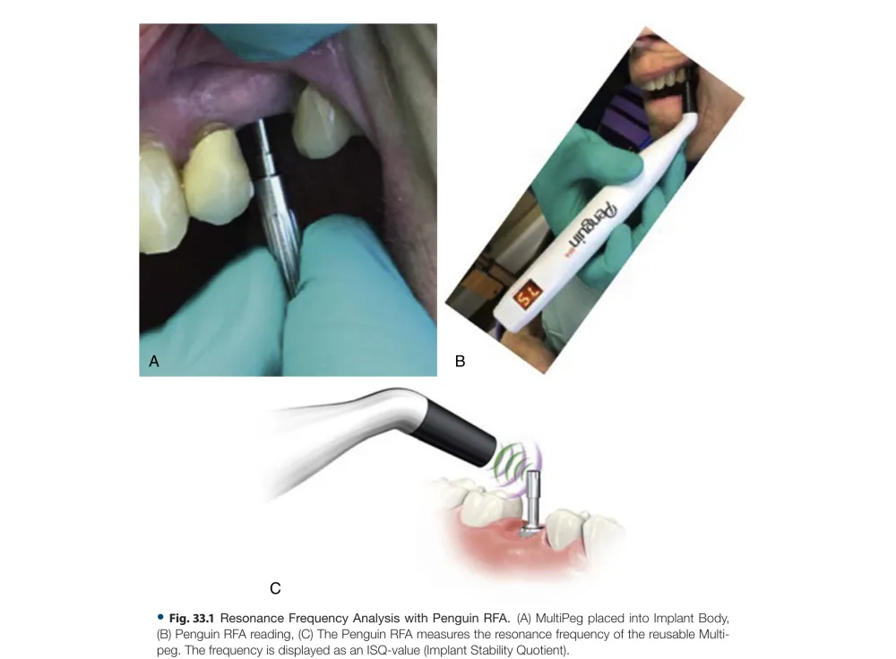

نسخه استخراجشده؛ ترجمه یا تأیید علمی انجام نشده است. وضعیت: captured
پیشنیاز یکم — تراکم استخوان کافی.
تراکم ایدهآل برای پروتز بارگذاریشدهی فوری تقریباً D1، D2، D3 است. یعنی D4 در این فهرست نیست — و از یونیت ۳٫۳ میدانی D4 بیشتر در ماگزیلای خلفی و پس از گرافت سینوس دیده میشود.
و مسیر خروج هم روشن است: در برخی موارد کیفیت ضعیف استخوان، حتی با پروتکلهای جراحی اصلاحشده، رسیدن به تورک بیش از ۳۵ نیوتنسانتیمتر ناممکن است. در این وضعیتها بارگذاری فوری توصیه نمیشود و پیش از بارگذاری، ۴ تا ۶ ماه ترمیم پیشنهاد میشود. افزون بر آن، بازتوانی پروتزی باید شامل پروتکل بارگذاری تدریجی استخوان (progressive bone loading) باشد که تراکم استخوان اطراف ایمپلنت را بالا میبرد.
پیشنیاز دوم — ابعاد کافی استخوان.
عددهای توصیهشده اینهاست:
و اگر کمیت استخوان به خطر افتاده باشد؟ ایمپلنتهای بارگذاریشدهی فوری در ریسک بالاتر تحلیل استخوان یا شکستاند، بنابراین ایمپلنتهای بیشتر یا ایمپلنتهایی با سطح تماس بزرگتر توصیه میشود. این دقیقاً همان منطقی است که درس ۴ روی آن ساخته میشود.
پیشنیاز سوم — تورک قرارگیری مطلوب.
عدد مرجع در ادبیات: تورک قرارگیری بیش از ۳۵ نیوتنسانتیمتر، برای تأمین پایداری کافی وقتی پروتز زیر بار قرار میگیرد.
اما این عدد مطلق نیست — و خودِ شواهد آن را میشکنند. مطالعاتی اینتگریشن موفق را در تورک ۳۰ نیوتنسانتیمتر یا کمتر نشان دادهاند. و گزارش شده است ایمپلنتهایی که در پروتکل All-on-4 با تورک کمتر از ۳۰ قرار گرفتهاند، پیامدهای موفقیت کوتاهمدت و تحلیل استخوان مارجینال مشابهی با ایمپلنتهای با تورک ۳۰ یا بیشتر داشتهاند.
پس چرا هنوز ۳۵ را میگوییم؟ چون رابطهاش با تراکم روشن است: در استخوان مطلوب (D1، D2، D3) تورک بیش از ۳۵ معمولاً بهدستآمدنی است؛ در استخوان کمتراکم (D3، D4) اغلب دشوار یا ناممکن است مگر با بازنگری در پروتکل جراحی — یعنی آمادهسازی کمتر از حد استئوتومی (underpreparation)، استفاده از استئوتوم، یا پروتکلهای استئودنسیفیکیشن.
جمعبندی سه عدد: D1–D3، ارتفاع ۱۲ و عرض ۶ میلیمتر، تورک بیش از ۳۵ N-cm. اگر در استخوان ضعیف به تورک بالای ۳۵ نرسیدی، پاسخ درست «فشار بیشتر روی مته» نیست — پاسخ درست ۴ تا ۶ ماه صبر و بارگذاری تدریجی است.
پیشنیاز چهارم — قرائت مطلوب آنالیز فرکانس رزونانس (RFA).
ثبات اولیهی یک ایمپلنت را میتوان با RFA سنجید. این مقدار یک ارزیابی عددی از حرکت جانبی (میکروموشن) ایمپلنت در فاز ترمیم میدهد و بهصورت ISQ (ضریب پایداری ایمپلنت) نمایش داده میشود.
و آستانهی تحمل میکروموشن به طراحی ایمپلنت بستگی دارد:
و سه آستانهی ISQ که تصمیم بالینی را تعیین میکنند:
به الگو دقت کن: هرچه زودتر بار میگذاری، عدد بالاتری میخواهی. این منطقی است — چون در بارگذاری فوری، پایداری مکانیکی اولیه تنها چیزی است که تا شکلگیری رابط بیولوژیک، ایمپلنت را نگه میدارد.
پیشنیاز پنجم — توانایی رسیدن به A-P spread کافی.
تعریف را دوباره یادآوری کنیم: فاصلهی بین وسط قدامیترین ایمپلنت تا دیستال ایمپلنتهای خلفی. این در افزایش مزیت مکانیکی و توزیع نیروی پروتز اهمیت دارد.
و رابطهاش با کانتیلور: A-P spread به توانایی کانتیلور کردن پروتز مربوط است. هرچه فاصلهی A-P بزرگتر، توزیع نیروی بهتری برای نیروهای واردشده به پروتز بارگذاریشدهی فوری.
اما بلافاصله یک قید هست که نباید فراموش شود: «با این حال، عوامل نیرو نقش چشمگیری در تعیین اینکه آیا یک پروتز میتواند کانتیلور شود ایفا میکنند.» یعنی A-P spread بزرگ بهتنهایی مجوز کانتیلور نیست — اگر بیمار برایکسیسم داشته باشد، همان A-P spread بزرگ هم ممکن است کافی نباشد. این دقیقاً همان زوج «هندسه در برابر نیرو» است که در یونیتهای طرح درمان بارها دیدی.
و پیشنیاز ششم — نبود پارافانکشن معنادار — در درس ۳ و ۴ بهتفصیل میآید، چون سنگینترین عدد این یونیت به آن مربوط است.
چکلیست ششتایی پیش از هر بارگذاری فوری: ۱) تراکم D1–D3، ۲) ارتفاع ۱۲ و عرض ۶ میلیمتر، ۳) تورک بیش از ۳۵ N-cm، ۴) ISQ ۷۰ یا بیشتر، ۵) A-P spread کافی، ۶) پارافانکشن معنادار نداشته باشد. هر کدام را جداگانه بسنج.
